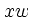
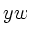

This appendix summarizes some of the changes that have been made in plt since 1999. It may be helpful to users who are familiar with earlier versions.
First, what has not changed: plt is almost completely compatible with previous versions. Scripts written for classic plt should continue to work without changes. The only exception is that, in classic plt, the default values of the window coordinates  and , used by the -hl, -vl, and -L options, were .5 (corresponding to the center of the rectangle defined by the axes). These default values are now those of the RC point of the previous label.
This change was made so that labels can be concatenated (see chapter 8). This feature allows you to change fonts or use superscripts or subscripts within labels. The new text box coordinates LN, CN, and RN are particularly useful for creating subscripts.
plt now runs on all popular platforms, with both X11 and PostScript output available under GNU/Linux, Mac OS X, MS-Windows, and Unix.
Perhaps the most obvious change is full support for all plt features
in X11 (screen) plots. This includes control of line width and style (dotted,
dashed, etc.); grey levels and colors, including polygon fills; and font
selection, sizing, and rotation. Rendering rotated text is not supported
directly by X11, and the method implemented in xplt is unavoidably
slow; but it works! The X11 driver also now supports progressive
display in quickplot mode (see page ![[*]](crossref.png) ).
).
plt now has full color support in X11 and PostScript, and uses the X11R6 color name database (even under MS-Windows) to make it easy to create color plots that can be rendered on-screen or on paper without changes.
The low-level input functions used by plt have been reimplemented, with the result that empty lines and comments are now acceptable in text data files, and that most CSV (comma-separated value) format data files are now readable by plt. This work also fixed an old bug that caused the first row of a data file to be lost if plt received its input from a pipe.
Also new are lwcat's -png and -pdf options for producing output that can be published on the Web in PDF and PNG formats (see appendix C).